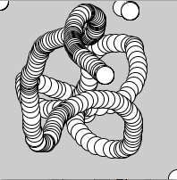
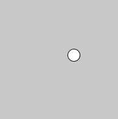
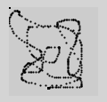
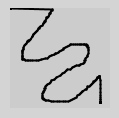

Statischer und Aktiver Modus
Bevor wir uns ansehen, wie Interaktion genau möglich ist, sollten wir uns mit den zwei verschiedenen Modi beschäftigen, die Processing hat. Dabei handelt es sich um den statischen und den aktiven Modus. In den jeweiligen Modi wird dein Code von Processing unterschiedlich verarbeitet:
Statischer Modus
Du kannst in Processing einfach mehrere Befehle untereinander aufschreiben und Processing arbeitet dann einen nach dem anderen ab. Hat Processing die letzte Zeile abgearbeitet passiert nichts mehr. Dieser Modus ist der statische Modus. Hier ein Beispiel:
println("Erst Text, dann ein Punkt.");
piont(50, 50);In diesem Beispiel wird zunächst ein Text in der Konsole ausgegeben und danach ein Punkt gezeichnet. Dass passiert aber so schnell hintereinander, dass es so wirkt, als würde es gleichzeitig passieren. Das nächste Beispiel zeigt etwas deutlicher, dass die Codezeilen nacheinander und von oben nach unten abgearbeitet werden:
println("1");
println("2");
println("3"); Jetzt steht in der Konsole:
1
2
3Nach der letzten Codezeile hält das Programm an. Das bedeutet, dass man mit dem statischen Modus nur ein Bild bzw. einen Zustand darstellen kann. Nachdem du dein Programm startest, führt Processing alle Zeilen aus und zeigt dir dann das Ergebnis in der Konsole und im Fenster an. Wenn wir mehr als ein Bild oder Zustand möchten, brauchen wir den aktiven Modus.
Aktiver Modus
Der aktive Modus kann mehrere Bilder oder Zustände schnell hintereinander darstellen, ähnlich wie ein Film oder Daumenkino. Teste in Processing mal folgenden Code:
void setup() {
print("und ");
}
void draw() {
print("hopp ");
}Hier definieren wir unsere ersten eigenen Funktionen: setup und draw. Du erinnerst dich? Funktionen sind mehrere Aktionen, die hintereinander ausgeführt werden und mithilfe eines Befehls aufgerufen werden können. Wenn das Programm läuft, dann führt Processing die Befehle setup und draw aus und wir dürfen hier definieren, was passieren soll, wenn diese Befehle aufgerufen werden.
Um in den aktiven Modus zu kommen, muss man keinen Schalter oder ähnliches betätigen: Sobald du in deinem Code entweder setup oder draw verwendest, schaltet Processing automatisch in den aktiven Modus.
Um zu definieren, was Processing tun soll, wenn es setup und draw ausführt, müssen wir den Code einfach nur in die jeweilgen geschweiften Klammern schreiben. Dann führt Processing die beiden Funktionen folgendermaßen aus:
- erst alle Zeilen in setup
- dann alle Zeilen in draw
- dann alle Zeilen in draw
- dann alle Zeilen in draw
- usw.
Processing wiederholt also die Abarbeitung der draw-Zeilen und zwar so lange, bis du den Stop-Knopf drückst. Das ist es letztlich, was Animation und Interaktion möglich macht. Warum? Wenn du einen Kreis von links nach rechts wandern lassen willst (Animation), dann machst du das, indem du den Kreis immer wieder zeichnest, jedes mal ein Stückchen weiter rechts. Ähnlich wie in einem Daumenkino. Das passiert dann eben in diesen draw-Zeilen. Bei unserem Beispiel oben würdest du in der Konsole folgende Ausgabe bekommen:
und hopp hopp hopp hopp ..Wir sehen: Die draw-Funktion sollte im aktiven Modus nicht fehlen, da sie das Kernstück des aktiven Modus ist, da sie Code immer wieder wiederholt.
Code-Block
Der Teil, der von den geschweiften Klammern eingeschlossen wird, nennt man einen Code-Block. So ein Code-Block kannst du dir so vorstellen, dass die enthaltenen Zeilen zusammengepackt werden und wie eine Einheit "gesehen" werden. Alle Zeilen, die zum aktuellen Code-Block gehören, sind eingerückt, damit man den Code besser lesen kann.
void setup() { // hier beginnt der Code-Block
println("wir"); // alles eingerückt!
println("sind");
println("ein Block");
} // hier endet erVerwende die Auto Format Funktion (Menu Edit) von Processing häufig, dann werden die Zeilen automatisch korrekt eingerückt (Tastenkürzel STRG-T bzw. CMD-T).
Achte immer darauf, dass deine Code-Blöcke richtig eingerückt sind. Wenn der Code komplexer wird, macht fehlerhafte Einrückung den Code teils unleserlich.
Mischen Impossible
Man darf aktiven und statischen Modus nicht mischen. Konkret heißt das: sobald eines der beiden Konstrukte (setup oder draw) hingeschrieben sind, darf man keine Befehle außerhalb von setup und draw hinschreiben. Das hier z.B. funktioniert nicht:
// aktiver Modus?
void setup() {
println("so geht das");
}
println("eher nicht"); // statischer Modus!Schreibe stattdessen deinen Code entweder im statischen Modus:
println("so geht das");
println("richtig!");Oder im aktiven Modus, wo nur ein setup() steht. Auch hier wird der Code nur einmal ausgeführt:
void setup() {
println("so geht das");
println("richtig!");
}Aktiven Modus anhalten?
Es gibt auch die Möglichkeit den aktiven Modus anzuhalten. Hierfür gibt es den Befehl noLoop(). Dieser Befehl sorgt dafür, das draw nicht immer und immer wieder druchgeführt wird, sondern nur einmal. Du kannst ihn gleich am Anfang in setup aufrufen oder aber auch an anderen Stellen in deinem Programm.
Interaktion mit der Maus
Interaktion bedeutet, dass der Benutzer während des Programmlaufs einen Einfluss auf das Programm nehmen kann. Das passiert über Eingabegeräte, also Tastatur und Maus, später vielleicht auch über Bluetooth, Sprache, Kamera, Spielecontroller und andere Sensorik. In diesem Abschnitt beschäftigen wir uns mit der Maus. Processing ist so freundlich, uns zwei Platzhalter (sogenannte Systemvariablen) zur Verfügung zu stellen, die immer durch die aktuellen Mausposition (x und y) ersetzt werden. Diese Variablen heißen mouseX und mouseY. Sie werden im Code immer durch die Mausposition ersetzt werden.
Zum Beispiel so wie in diesem Programm:
void setup() {
size(200,200);
}
void draw() {
ellipse(mouseX, mouseY, 20, 20);
}Du siehst, dass der Kreis immer der Maus folgt, weil eine Urpsrungskoordinaten mit der Mausposition verbunden sind.

Wenn es so aussehen soll, also ob der Kreis sich bewegt, müssen wir den Hintergrund immer neu befüllen und den "alten" Kreis übermalen.
void setup() {
size(200,200);
}
void draw() {
background(200); // Bild löschen durch Übermalen
ellipse(mouseX, mouseY, 20, 20);
}Jetzt sehen wir immer nur einen Kreis:

Okay, neues Beispiel. Jetzt malen wir nur Punkte, ohne das Bild zu löschen:
void setup() {
strokeWeight(2);
}
void draw() {
point(mouseX, mouseY);
}Sieht fast aus wie eine handgemalte Linie, aber mit Lücken.

Wenn wir eine geschlossene Linie malen wollen, brauchen wir mehr Infos, nämlich die Mausposition aus der jeweils vorherigen draw()-Runde. Die stellt uns Processing netterweise auch zur Verfügung und zwar mit pmouseX und pmouseY.
void setup() {
strokeWeight(2);
}
void draw() {
line(pmouseX, pmouseY, mouseX, mouseY);
}
In diesem Beispiel zeichnet das Programm eine Linie zwischen der Mausposition aus der vorherigen draw()-Runde und der aktuellen Position. Auf diese Weise entsteht eine geschlossene Linie.
Interaktion mit Tasten
Als nächstes sehen wir uns an, wie wir auf den Druck einer Taste auf der Tastatur oder mit der Maustaste reagieren können. Um auf eine Taste auf der Tastatur reagieren zu können benötigen wir die Funktion keyPressed(), die Processing uns zur Verfügung stellt (Das draw() benötigen wir, damit wir im aktiven Modus sind):
void draw() {} // nichts tun
// Auf Taste reagieren (egal welche)
void keyPressed() {
background(0);
}Der Teil mit "void keyPressed() ..." erinnert an den Aufbau von setup() und draw(). Es handelt sich dabei ebenfalls um eine Funktion. Das bedeutet, dass aller Code, der sich innerhalb der geschweiften Klammern (dem Code-Block) befindet, aufgeführt wird, wenn eine Taste gedrückt wird.
Der Code, den wir benötigen, um auf das Klicken mit der Maustaste zu reagieren sieht fast gleich aus - die Funktion hat nur einen etwas anderen Namen:
void mousePressed() {
background(0, 255, 0); // Hintergrund wird grün, wenn die Maustaste gedrückt wird
}Zusammenfassung
- Statischer Modus: Code wird zeilenweise von oben nach unten abgearbeitet. Ist die letzte Zeile verarbeitet, ist das Programm zu Ende.
- Aktiver Modus: Sobald du eines der Konstrukte setup() oder draw() hinzufügst, startet Processing das Programm im aktiven Modus. Das bedeutet, dass zunächst der Code in setup() 1x abgearbeitet wird (von oben nach unten). Dann wird der Code in draw() immer wieder abgearbeitet, auch jeweils von oben nach unten. Die Häufigkeit, mit der draw() pro Sekunde durchlaufen wird, nennt man Frame Rate und lässt sich mit dem Befehl frameRate() ändern.
- Modus nicht mischen: Wenn du den aktiven Modus anstrebst, darf außerhalb der Code-Blöcke von setup() und draw() kein Code stehen.
- Mausposition: Die aktuelle Mausposition steht, sofern die Maus sich über dem Grafikfenster befindet in den Variablen mouseX und mouseY.
- Man muss sich vorstellen, dass die beiden Wörter in dem Moment, wo die Code-Zeile verarbeitet wird, durch den aktuellen Zahlenwert ersetzt werden.
- Die beiden Variablen erlauben es, interaktive Zeichnungen zu programmieren, wo die Mausposition beispielsweise zur Bestimmung von Position, Größe oder Farbe eingesetzt wird.
- Interaktion mit Tasten: Möchtest du auf den Druck einer beliebigen Taste auf der Tastatur reagieren, dann verwendest du die Funktion keyPressed(). Der Code dieser Funktion wird immer dann ausgeführt, wenn eine Taste gedrückt wird. In gleicher Weise kannst du die Funktion mousePressed() schreiben. Dieser Code wird immer dann ausgeführt, wenn eine Maustaste gedrückt wird.